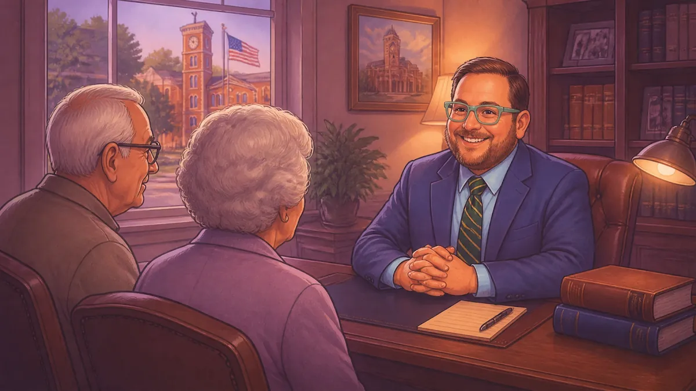
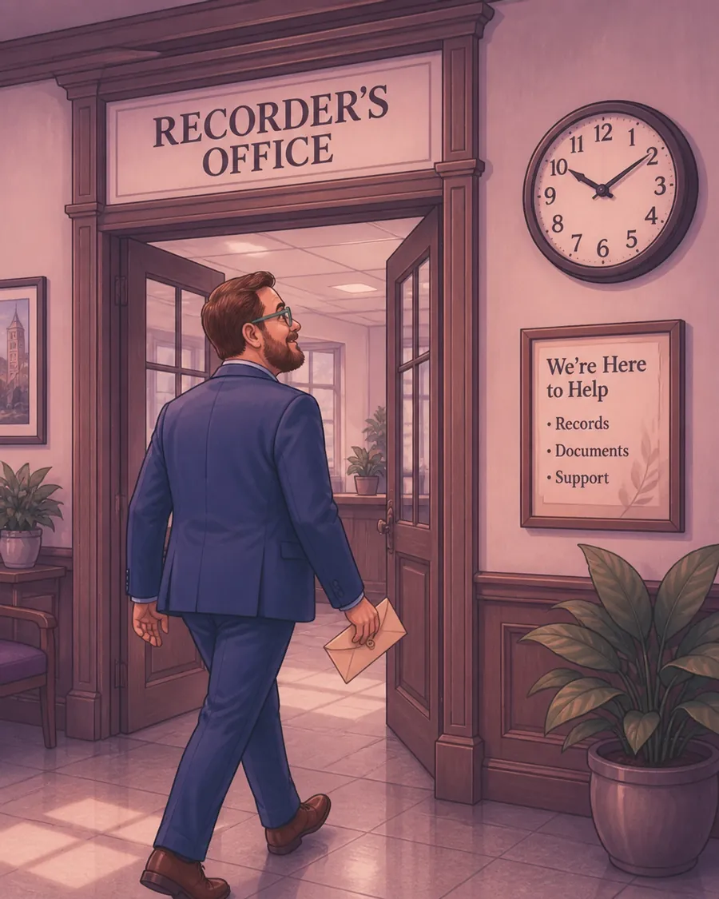

Indiana's New 2026 TOD Deed Law Changes: 5 Things Jennings County Families Should Know
Helping people in a small town means wearing many hats. One day I might be helping a neighbor in North Vernon with a small claims case. The next day, I might be in Vernon helping a family plan for the future. As a Jennings County attorney, I know that legal talk can get confusing. My goal is to listen to what you have to say and give you clear options that make sense for your life.
Right now, many folks in our area are asking about Transfer on Death (TOD) deeds. These are great tools. They let you pass your home or land to your loved ones without going through a long court process called probate. But the laws in Indiana changed recently. If you already have a TOD deed, or you're setting one up, you need to know how these 2026 rules affect your property in places like Scipio, Hayden, or Commiskey.
Here are five things you should know about the new TOD deed laws.

1. The Auditor's Office is Your First Stop
In the old days, you might just take a deed straight to the place that records them. But now, the law is very strict. Before your TOD deed can be official, it must have a stamp from the County Auditor's office.
Think of it like a "hall pass" for your paperwork. The Auditor checks the tax and parcel info to make sure everything is correct. If you try to go straight to the Recorder's office without that Auditor endorsement, they will turn you away.
As a lawyer in Vernon, Indiana, I spend a lot of time at the courthouse. I see people get frustrated when they wait in line only to find out they missed a step. When we work together, I make sure we hit every office in the right order. This keeps your plan on track and saves you from a headache.
2. Watch Out for the Insurance Gap
This is a big change for 2025 and 2026. When someone passes away, their home insurance doesn't always stay active for the person inheriting the house. In the past, this caused big problems. If a house burned down a week after the owner died, the family might find out there was no insurance coverage left.
The new Indiana laws now require insurance companies to keep coverage going for a short time: usually 30 to 60 days. This gives the new owner time to get their own policy.
Even better, the law now suggests adding a special "warning" right on the deed. This warning tells your kids or loved ones exactly what they need to do about insurance. It's an optional step, but as a helpful Jennings County attorney, I think it is a smart move. It protects your family from a disaster they didn't see coming.
3. Married Couples Must Both Sign
If you and your spouse own your home together, you both have to be on the same page. In Indiana, if a married couple owns a home as "tenants by the entirety" (which just means you own it together as one unit), one person cannot give the house away on their own.
If only one spouse signs the TOD deed, the law says that deed is "void." That means it is basically a blank piece of paper. It won't work when the time comes.
When you visit my office, I make sure we look at your current deed first. We need to see exactly how your names are listed. If both of you are on there, both of you need to sign the new TOD deed in front of a notary. It's a simple rule, but it's one that people forget all the time.
4. The "Record Before Death" Rule is Final
Timing is everything with these deeds. You can sign the paper, get it notarized, and even get the Auditor's stamp. But if you put that paper in a drawer and forget to record it at the Jennings County Recorder's office, it won't count.
The law says the deed must be recorded before the owner passes away. If it's not recorded, the land doesn't transfer automatically. Instead, it might have to go through probate court, which takes longer and costs more money.
I always tell my clients in Butlerville and Vernon: don't wait. Once the deed is ready, take it to the courthouse right away. Or, better yet, let me handle the filing for you. We want to make sure your wishes are official while you are still here to see it done.

5. Creditors and Medicaid Can Still File Claims
Some people think a TOD deed hides their house from bills or the government. That isn't how it works. While a TOD deed helps you avoid probate, it does not hide the house from people you owe money to (creditors).
If there are big medical bills or if the state is looking for Medicaid recovery, they can still file a claim against the property. There are specific "windows" of time where these people can make a claim after someone passes away.
Being honest and transparent is part of my "small town lawyer" approach. I won't tell you that a TOD deed is a magic shield for your money. But I will give you practical options to manage your estate so your family knows what to expect.
Why Work With a Local Attorney?
You might see websites online that offer cheap legal forms. But those websites don't know the local rules at the Jennings County Courthouse. They don't know the people in the Auditor's office, and they certainly don't listen to your specific family story.
I take a personal approach. I handle everything from criminal defense to divorce and custody, but estate planning is where I help families stay together and stay protected. Whether you are in North Vernon or I'm traveling to see you in Seymour or Versailles, I keep my fees honest: including being clear about any travel fees.
If you have questions about your deed or want to make sure your family is taken care of, let's talk. Contact Chris Doran Law LLC today at our Vernon office to set up a time to chat. We can look at your deeds together and make sure your plan follows all the new 2026 rules.